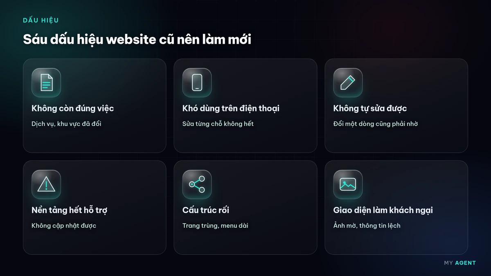
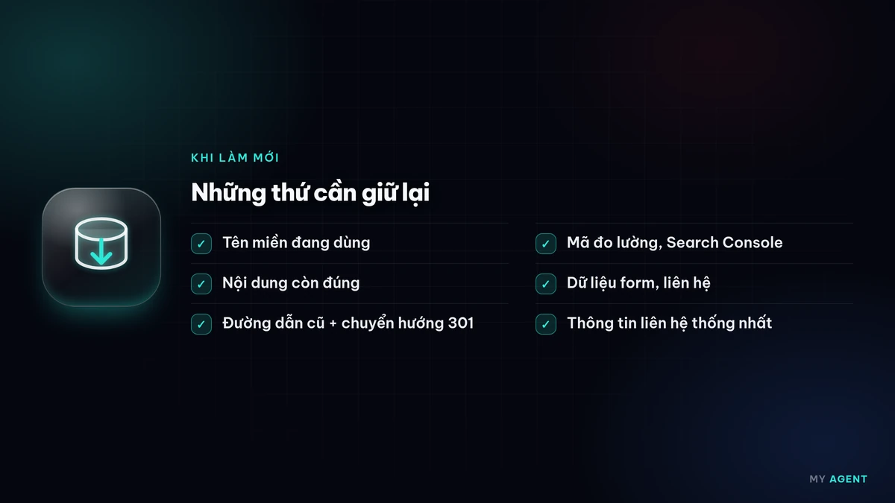
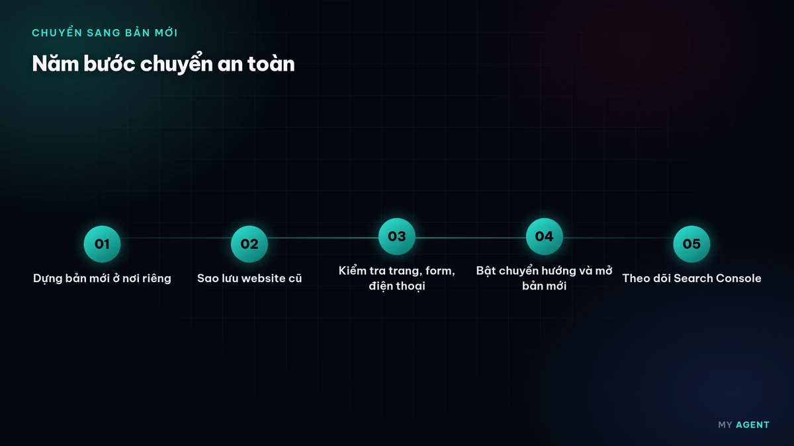

Website làm từ vài năm trước vẫn chạy, nhưng chủ doanh nghiệp bắt đầu ngại gửi đường dẫn cho khách, hoặc mỗi lần sửa một dòng chữ lại phải nhờ người khác. Câu hỏi lúc đó thường là: làm lại từ đầu, hay chỉ cần sửa và chăm sóc cho tốt? Câu trả lời giống nhau dù anh/chị bán nội thất, mở trung tâm ngoại ngữ, nhận sửa điện lạnh hay làm văn phòng luật. Bài này nêu các dấu hiệu nên làm mới, cách tự quyết định, và những thứ phải giữ lại để không mất những gì website cũ đã có.
Làm mới khác chăm sóc thế nào
Chăm sóc là giữ cho website đang có chạy ổn: cập nhật, sao lưu, vá lỗi, sửa nội dung nhỏ. Phần này có ở bài chăm sóc website sau khi bàn giao. Làm mới là thay phần nền: giao diện, cấu trúc trang, cách quản trị, đôi khi cả nền tảng kỹ thuật bên dưới.
Không phải website cũ nào cũng cần làm mới. Nếu khách vẫn hiểu anh/chị làm gì, liên hệ được, và anh/chị tự sửa được nội dung, thường chỉ cần chăm sóc và chỉnh vài chỗ. Làm mới hợp lý khi việc vá từng chỗ tốn công hơn, hoặc không giải quyết được vấn đề gốc.
Dấu hiệu nên làm mới

- Nội dung không còn đúng việc kinh doanh. Dịch vụ đã đổi, đã mở thêm mảng mới hoặc chuyển khu vực, nhưng cấu trúc trang cũ không có chỗ để nói rõ.
- Khó dùng trên điện thoại mà sửa từng chỗ không hết, vì giao diện cũ được làm cho máy tính. Cách tự kiểm có ở bài website hiển thị tốt trên điện thoại.
- Không tự sửa được nội dung. Mỗi lần đổi số điện thoại, ảnh hay giờ làm việc đều phải nhờ người làm web, hoặc không còn ai nắm mã nguồn.
- Nền tảng, giao diện hoặc plugin đã ngừng hỗ trợ, không cập nhật được nữa. Đây cũng là rủi ro bảo mật, xem thêm ở bài bảo mật website cơ bản.
- Cấu trúc rối: trang trùng nhau, menu dài, khách không biết bắt đầu từ đâu, nhiều trang đã lỗi thời mà không ai gỡ.
- Giao diện làm khách ngại so với cách doanh nghiệp đang làm việc thật: ảnh mờ, chữ khó đọc, thông tin mâu thuẫn với Facebook hay trang Google trên bản đồ.
Một hai dấu hiệu nhỏ thường sửa được. Nhiều dấu hiệu cùng lúc, nhất là không tự sửa được và nền tảng hết hỗ trợ, là lúc nên tính chuyện làm mới.
Cách tự quyết định: sửa hay làm mới
Trước khi gọi đơn vị làm web, anh/chị có thể tự trả lời vài câu:
- Website đang giúp được gì? Khách có tìm thấy, có liên hệ qua web không? Nếu đã gắn công cụ đo, xem số liên hệ và trang được xem nhiều theo bài đo lường website bằng Google Analytics.
- Vấn đề nằm ở nội dung hay ở phần nền? Chữ sai, ảnh cũ thì sửa nội dung là đủ. Không sửa được, không chạy được trên điện thoại, nền tảng hết hỗ trợ thì là vấn đề phần nền.
- Ai đang giữ quyền quản trị, tên miền và hosting? Nếu chưa rõ, làm rõ trước khi làm gì khác.
- Sửa từng chỗ có tốn hơn làm mới không? So sánh dựa trên báo giá thật của từng phương án, không ước chừng. Các yếu tố làm thay đổi chi phí nằm ở bài chi phí làm website phụ thuộc yếu tố nào.
Nếu phần lớn câu trả lời nghiêng về phần nền, làm mới thường là lựa chọn gọn hơn về lâu dài. Các tiêu chí để đánh giá bản mới có ở bài website chuyên nghiệp cần gì.
Những gì phải giữ khi làm mới
Làm mới không có nghĩa là bỏ hết. Website cũ có thể đã được Google biết đến, đã được khách lưu đường dẫn, đã có nội dung tốt. Mất những thứ này là mất công sức nhiều năm.

- Tên miền. Giữ nguyên tên miền đang dùng nếu không có lý do bắt buộc phải đổi. Tên miền nên đứng tên doanh nghiệp, như trong bài chọn tên miền và hosting.
- Nội dung còn tốt. Bài viết, trang dịch vụ, câu hỏi thường gặp còn đúng thì giữ lại, biên tập cho gọn rồi đưa sang bản mới. Không viết lại cho khác chỉ vì muốn mới.
- Đường dẫn cũ. Lập danh sách các trang đang có (có thể lấy từ sitemap hoặc Search Console). Trang nào đổi địa chỉ thì đặt chuyển hướng 301 từ địa chỉ cũ sang địa chỉ mới gần nghĩa nhất, theo hướng dẫn về lệnh chuyển hướng của Google. Không dồn tất cả về trang chủ.
- Tài khoản đo lường và Search Console. Giữ mã đo cũ hoặc chuyển sang bản mới để số liệu không bị đứt đoạn.
- Form và dữ liệu khách. Biết rõ dữ liệu liên hệ cũ đang nằm ở đâu, xuất ra lưu trữ trước khi tắt website cũ.
- Thông tin liên hệ thống nhất với các kênh khác, như bài trang Giới thiệu và thông tin liên hệ.
Chuyển sang bản mới thế nào cho an toàn

- Dựng bản mới ở nơi riêng, không sửa trực tiếp trên website đang chạy.
- Sao lưu đầy đủ website cũ trước ngày chuyển.
- Kiểm tra trước khi mở: mọi trang chính, form, nút gọi và Zalo, hiển thị trên điện thoại, tốc độ (xem bài tốc độ website cơ bản).
- Sau khi chuyển, thử vài đường dẫn cũ xem có tới đúng trang mới không, gửi sitemap mới trong Search Console và theo dõi các trang báo lỗi trong vài tuần. Nếu đổi cả cấu trúc đường dẫn, Google có tài liệu riêng về di chuyển trang web. Phần nền tảng SEO còn lại nằm ở checklist SEO cơ bản.
Khi làm đúng, website mới không nhất thiết làm mất vị trí đang có trên Google, nhưng cũng đừng kỳ vọng thứ hạng tự tăng chỉ vì đổi giao diện. Thường cần thời gian để Google ghi nhận các địa chỉ mới.
My Agent hỗ trợ gì
My Agent hỗ trợ thiết kế website, bao gồm làm mới website cũ: rà nội dung giữ lại, lập danh sách đường dẫn và chuyển hướng, kiểm tra trước khi chuyển. Nếu website cũ vẫn ổn, chúng tôi có thể gợi ý chỉ cần chăm sóc website. Phần nội dung trên công cụ tìm kiếm có thể xem ở SEO tổng thể. Chúng tôi phản hồi trong giờ làm việc; nếu muốn trao đổi, hãy liên hệ. Giá tham khảo, chưa bao gồm VAT, nằm tại bảng giá.
Câu hỏi thường gặp
Bao lâu thì nên làm mới website một lần?
Không có mốc cố định. Nên dựa vào dấu hiệu thật: website còn đúng việc kinh doanh không, dùng được trên điện thoại không, tự sửa được không, nền tảng còn được hỗ trợ không. Website được chăm sóc đều có thể dùng tốt nhiều năm.
Làm mới website có làm mất vị trí trên Google không?
Có thể bị ảnh hưởng nếu đổi đường dẫn mà không chuyển hướng, hoặc bỏ mất nội dung tốt. Giữ tên miền, giữ nội dung còn đúng, đặt chuyển hướng 301 cho từng trang đổi địa chỉ và theo dõi Search Console sau khi chuyển giúp hạn chế rủi ro này.
Có cần đổi tên miền khi làm mới không?
Thường là không. Giữ tên miền cũ giúp khách và Google vẫn tìm được anh/chị. Chỉ đổi khi có lý do rõ, như đổi thương hiệu; khi đó cần chuyển hướng toàn bộ sang tên miền mới.
Nội dung cũ nên giữ hay viết lại hết?
Giữ phần còn đúng và có ích, biên tập lại cho gọn. Gỡ hoặc gộp các trang đã lỗi thời, trùng lặp. Viết mới những phần cấu trúc cũ chưa có, như dịch vụ mới hoặc câu hỏi khách hay hỏi.
Từ khóa: làm mới website · thiết kế lại website · doanh nghiệp nhỏ · chuyển hướng 301